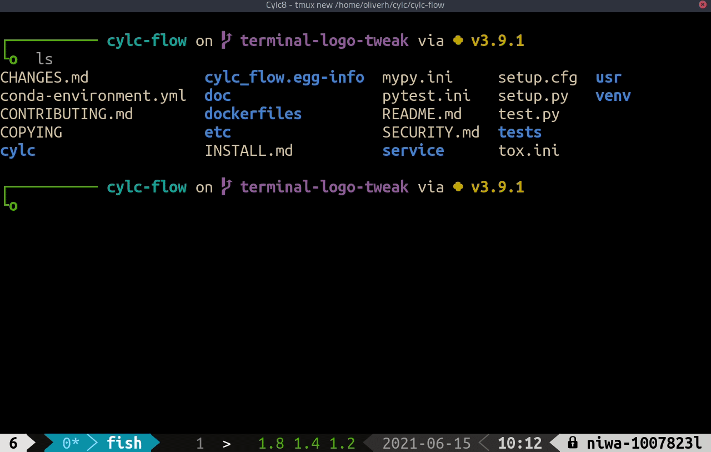

Cylc 8 Project Update
UM User Workshop June 2021
Hilary Oliver, NIWA

Deja Vu?
any progress since November 2020? (yes!)

terminology
- Suite
- ...
- ...
- Suite daemon
- ...
- Batch system
- ...
- Job hosts
- ...
-
Suite is now WORKFLOW
- (a more widely understood term)
-
suite.rc=>flow.cylc
-
Suite daemon is now SCHEDULER
- (a more widely understood term)
-
Batch system is now JOB RUNNER
- (they're not all “batch systems”)
-
Job hosts => PLATFORMS
- (resilience to hosts going down)
# Cylc 7
[runtime]
[[model]]
[[[remote]]]
host = hpc1.login.1
[[[job]]
batch system = pbs
[[model_cleanup]]
[[[remote]]] # Deprecated Cylc 7
host = hpc1.login.1
[[[job]]
batch system = background
# Cylc 8
# Use "platform" definitions in global config
# Hosts, job runners, etc.
[runtime]
[[model]]
platform = hpc1
[[model_cleanup]]
platform = hpc1_background
task states


CLI & workflow installation
rose suite-run- ...
cylc run, restart- ...
cylc monitor
rose suite-run=>cylc install- workflow installation is now native to Cylc
cylc run, restart=>cylc play- safety: restart by default
cylc monitor=>cylc tui

GUI

job scripts

it's now safe for tasks to change Python environment
scheduler
new algorithm!


Cylc 7 "spawn on submit"

Cylc 8 "spawn on demand"